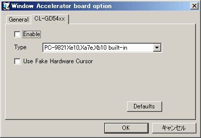

チェックを入れるとCirrus Logic CL-GD54xxウィンドウアクセラレータが有効になります。この設定はリセット後に反映されます。
再現したいCL-GD54xx内蔵の機種を選択します。 内蔵アクセラレータについては機種IDを変更するだけで基本動作は変わりませんが、B-MATE系の内蔵アクセラレータを指定した場合は若干挙動が変化します。 特に理由が無ければXe10にしておくことをおすすめしますが、場合によってはB-MATE系やPC-9801-96を使うと動く場合もあります。
比較的新しいOSであればPCI接続のCL-GD5446を使用することも出来ます。 CL-GD5446を使用すると、256色で1280x1024の解像度や、64k色で1024x768の解像度での表示が可能となります。 ただし、これを使用する場合はPCIバスも有効にし、OSにPCIバスのドライバを入れる必要があります。
MELCO製ウィンドウアクセラレータはMS-DOS、Windows3.1での使用に最適化されていますが、Win9xで使用することも出来ます。
I-O DATA製ウィンドウアクセラレータもMS-DOS、Windows3.1での使用に最適化されていますが、Win9xで使用することも出来ます。
Auto Selectにすると、アクセスされたI/Oポートから推測して自動切り替えします。 一度どちらかに切り替わるとCPUがリセットされるまで変わる事はありません。 ただし、セットアップのデバイス検出時などポートをサーチしに来る状況での使用は誤作動の恐れがあるため、この設定はおすすめしません。
各OSで最適な組み合わせは以下の表の通りです。
| Type | DOS | Win3.1 | Win95 | Win98 | WinNT4 | Win2k |
|---|---|---|---|---|---|---|
| PC-9821Bp,Bs,Be,Bf | ○ | ？ | ？ | ？ | ？ | ？ |
| PC-9821Xe | ？ | ？ | ？ | ？ | ？ | ？ |
| PC-9821Cb | ？ | ？ | ？ | ？ | ？ | ？ |
| PC-9821Cf | ？ | ？ | ？ | ？ | ？ | ？ |
| PC-9821Xe10,Xa7e,Xb10 | ○ | ○ | ◎ | ○ | ○ | ○ |
| PC-9821Cb2 | ？ | ？ | ？ | ？ | ？ | ？ |
| PC-9821Cx2 | ？ | ？ | ？ | ？ | ？ | ？ |
| PCI CL-GD5446 | × | × | × | ◎ | ◎ | ◎ |
| WAB-S | ○ | ○ | ？ | ？ | × | × |
| WSN-A2F/A4F | ○ | ○ | △ | △ | △ | △ |
| GA-98NB | ◎ | ◎ | ○ | ○ | × | × |
| PC-9801-96 | ○ | ？ | ？ | ？ | ？ | × |
◎=最適, ○=使用可, △=微妙, ×=使用不可, ？=未確認
CL-GD54xxの設定を初期状態に戻します。
本来のハードウェアカーソルの代わりにホストのカーソルと同じグラフィックのカーソルを表示します。 本来のハードウェアカーソルがエミュレーション不具合で見えず、操作不能となってしまった場合に暫定的に用いることが出来ます。 現在のバージョンではハードウェアカーソル系不具合の多くが修正されたため使う必要はほとんどありません。